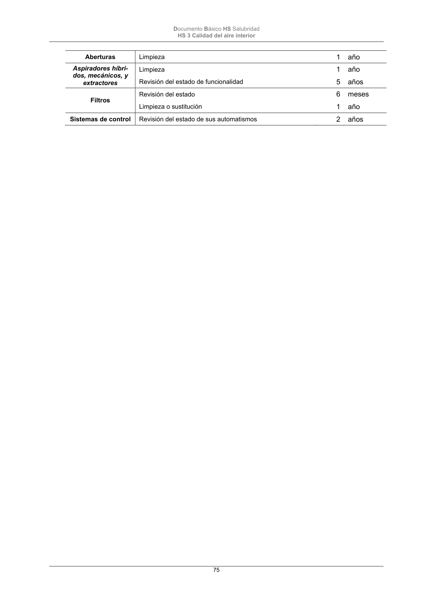

DB-HS Salubridad · edición 2022-06-14 · capa oficial
Documento DB-HS-oficial · SHA-256 del PDF 68df3caacc95f71aee2ec1ba7b2c65ae66155c21e3a8785521b8fdd4fd640d3b
Página física 75 de 184.
Copia fiel del PDF fuente · Fuente oficial
Ficha de la disposición en la fuente oficial
Formato: Texto de la página (Markdown)
Documento Básico HS Salubridad HS 3 Calidad del aire interior 75 Aberturas Limpieza 1 año Aspiradores híbri- dos, mecánicos, y extractores Limpieza 1 año Revisión del estado de funcionalidad 5 años Filtros Revisión del estado 6 meses Limpieza o sustitución 1 año Sistemas de control Revisión del estado de sus automatismos 2 años
